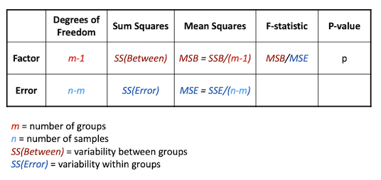

Image 1 of 1: ‘Table showing Type 1 and Type 2 errors.’
In hypothesis testing, there are two possible causes for a false
conclusion: rejecting the null hypothesis when it is true (a type I
error), or failing to reject the null hypothesis when it is false (a
type II error). The probability of a type 1 error is given by the
p-value; it is possible to calculate the probability of a type II error,
but we will not cover that in this course.
Image 1 of 1: ‘Decision tree to determine appropriate test to use. Question one - Are the data normally distributed? Question 2 - Are the data paired? If the data are both normally distributed and paired, us a paired T-test If the data are normally distributed but not paired, use a T-test If the data are not normally distributed but are paired, use the Wilcoxon signed rank test If the data are neither normally distributed nor paired, use the Mann-Whitney test’
Image 1 of 1: ‘Decision chart for appropriate test to use with multiple groups. Question one: Are the normally distributed. Question 2: Are the data paired. If they are both normally distributed and paired, use Repeated Measures ANOVA. If they are normally distributed and not paired, use one-way or two-way ANOVA. If they are not normally distributed but are paired, use the Friedman test. If they are neither normally distributed nor paired, use the Kruskal-Wallace test.’
Figure 2
Image 1 of 1: ‘Table showing the breakdown of variation between and within groups’

Figure 3
Figure 4
Image 1 of 1: ‘Table summarising happiness scores by sex and treatment’
Figure 5
Figure 6
Figure 7
Image 1 of 1: ‘Graph explaining interaction of variables. The first plot shows a situation with no interaction, where the effect of treatment is the same irrespective of the sex of the patient. The second shows a situation with interaction, where the outcome is very different for the two sexes’